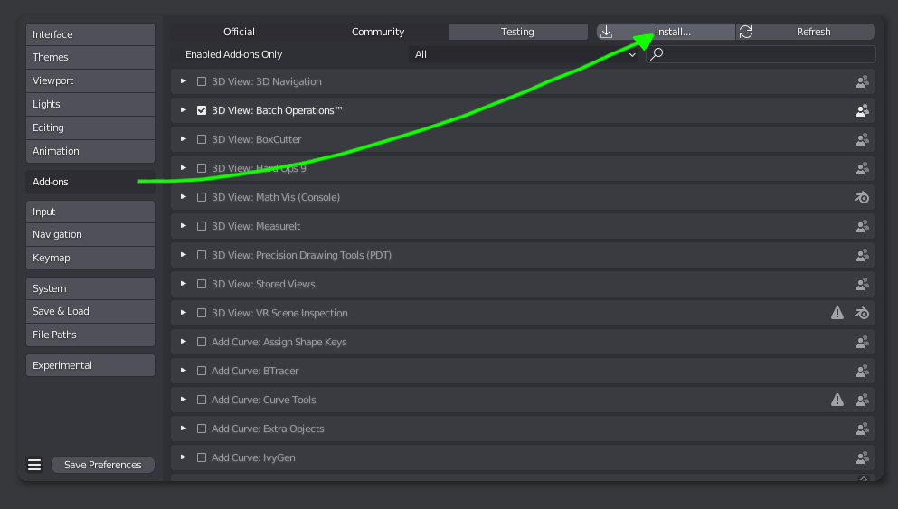
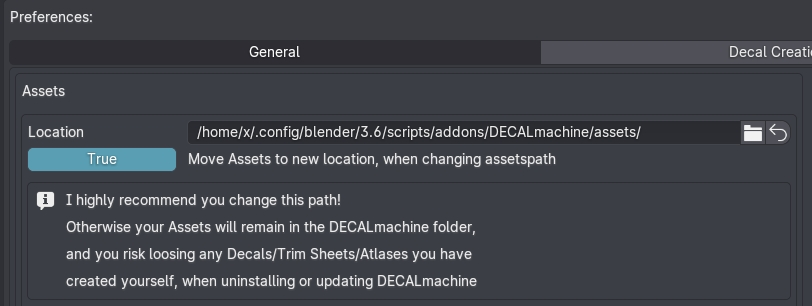
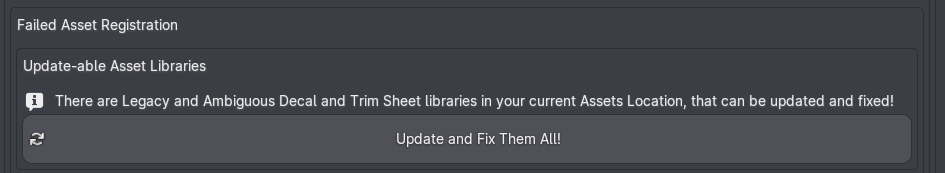

Requirements
Experimental Builds
Experimental Blender builds such as 4.5-alpha/beta may work, but are not officially supported, and fixing any issues related to them, will not be a priority. Still, feel free to report any issues you encounter.
Custom Builds
Custom Blender builds such as OctaneRender for Blender may not support all of Blender's native shader nodes.
DECALmachine only relies on native Blender nodes and is not at fault for any issues resulting from using custom builds.
Older versions?
If you want to run DECALmachine on an older Blender version outside of the currently supported range, you can reach out to me via email and I'll supply an older addon version.
Latest DECALmachine
The latest version of DECALmachine is 2.4.2 released on June 7th, 2025 - available on Superhiveformerly known as Blender Market and Gumroad.
See this page to learn what's new in the latest versions, or see the changelog for the full, detailed release history.
How to Install?
Blender 4.2+ Drag and Drop Installation
Blender supports drag and dropping addon .zip files (both legacy and extension addons!) from your system's filebrowser on the open Blender application to do the installation.
This is super convenient, and also works for update installations, but you should always restart Blender after updating to a new addon version.
Otherwise, the traditional ways to install described below also work.
Fresh Installation
If you don't have a previous version of DECALmachine installed, you should follow the default installation process, from the .zip file.
 installation from the Addons tab of Blender's preferences, by selecting the addon's .zip file
Update Installation
previous version of DECALmachine installed already
Attention
The video below applies to updating from DECALmachine 2.11 (or later).
If you are updating from an earlier version of DECALmachine, that doesn't have the Integrated Updater yet, please see these legacy update instructions.
- Unfold it from the top of the DECALmachine addon preferences.
- Select the DECALmachine zip file to install, if it's in your home dir or Downloads folder, it will be found automatically.
- Verify it's the version you want, and Quit Blender to install the update, otherwise remove it.
Post-Installation
PIL/Pillow
For more advanced usage of DECALmachine, a python module called PIL/Pillow is required.
PIL enables DECALmachine to manipulate images, and so is required for Decal and Trim Sheet Creation, as well as for Atlasing and Baking.
Installation has been automated and is covered below. Some additional information can be found the FAQs.
Keep in mind
If you use DECALmachine 2.4.2 in Blender 4.3+, you will need PIL to update the supplied example assets.
Move Assets Location
After a fresh Installation, when unfolding the addon preferences, you will always be greeted with this message, asking you to move your assets location elsewhere, and out of the DECALmachine addon folder.

I highly recommend you follow this advice, and when you do so, pay attention to the Move toggle.
If this is the first time you are going to use an outside assets location for DECALmachine, you should set the Move toggle to True. With it enabled, all assets from the current location will be moved to the new location, as you change the assets path.
If on the other hand you have used DECALmachine before and have a previous asset location for it setup already somewhere, or if you use a shared assets location as part of a team, you should disable this toggle before you change the assets location.
Update Legacy Assets
Depending on the Blender version you are using with DECALmachine, an update even of the supplied example assets may be required. This is currently the case when using DECALmachine 2.4.2 in Blender 4.3 and 4.4, but not when using the same version of DECALmachine in Blender 4.2 LTS.
 A Batch Updater message like this - or similar - may show in the DECALmachine addon preferences
This will also be the case for any assets you have created previously, and it may also be the case for any 3rd party decal libraries, that you may want to import and use.
The reason for this is, that every time Blender introduces changes to materials with an update, in particular to the Principled BSDF shader node, DECALmachine will try to make use of any new features and ensure they they are properly supported in all your previously created decal assets too.
Decal Materials being in sync with Blender's latest materials is essential for Material Matching too.
As an example for instance, Blender 4 introduced foldable panels on shaders and node groups, and DECALmachine 2.9+ makes full use of these in its decal- or trimsheet node groups.
 Decal Node Groups with panels in Blender 4
Decal Node Groups with panels in Blender 4
Changes like these will require an update of all previously saved decal assets and libraries, and also an update of all .blend files, that still use these legacy assets.
At least if you want to continue to work on them - they should still render and display fine even without being updated.
The two tools used for this are: UpdateDecalLibrary and UpdateBlendFiles.
In addition and for convenience there is a BatchUpdater, that iteratively calls the UpdateDecalLibrary tool for each legacy decal or trimsheet libraries in your chosen assets location.
This is what's shown above in the screenshot, exposing the Update and Fix Them All button.
Issues with Assets
Go to the next page covering the addon preferences, to learn more about dealing with failed asset registrations.
Special Case: Blender on MacOS
MacOS users should install Blender properly, by following the official instructions.
Avoid running it just from the Downloads folder!
Note that, for dragging of files and folders, you need to hold down the COMMAND key.
This will ensure AppTranslocation1 is avoided.
{kind=link}
Furthermore, your download may not actually result in a .zip file, and instead extract automatically. This can and needs to be be changed in Safari settings.
Special Case: Blender on Arch Linux
Arch Linux users and users of other Arch based or similar rolling release distros are advised to use the official Blender builds.
The Blender package in the Community repository does not supply its own Python, and does not follow official recommendations.
As a consequence, your system's python version may not work properly with Blender and/or DECALmachine.
Note
Use the official tarball from blender.org to be on the safe side, it comes with a bundled Python and is the correct version that Blender addons are built against.
-
Learn more about AppTranslocation. ↩